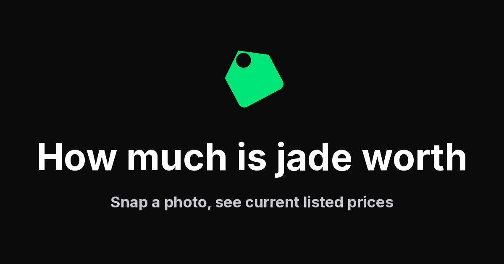

People often type how much is jade worth after a bangle, a pendant, or a carved ornament comes out of a drawer. The first instinct is to trust a celebrity headline that happens to share the name, or to copy a dramatic auction number onto a green stone that has never been identified. That is how a treated piece, or a simulant, gets talked about like untreated jadeite, and how a careful carving gets sold as costume jewellery because nobody checked the object itself.
If you want a useful how much is jade worth, check yours by photo. Start with the piece in your hand, confirm what the material appears to be, and look at a current listed range for comparable objects. That is what  How Much Is It Worth: Scanner is built to do.
How Much Is It Worth: Scanner is built to do.
This question is about jade jewellery and carvings. It is not about the net worth of a public figure named Jade. If you have a bangle, a cabochon, a pendant, a bead necklace, or a carved ornament, stay with the object. If you are trying to value gold or mixed jewellery that happens to include a green stone, the mount and the metal matter too, and should be photographed with the piece.
Jade, in the gem trade, is an umbrella for two different materials, jadeite and nephrite. The Gemological Institute of America treats them that way. They can look similar in a casual photo, and both are used for jewellery and for carvings. GIA's jadeite quality discussion puts colour, transparency, and texture first, in that order. The finest jadeite is described there as almost transparent with a vibrant emerald-green colour, a look often called imperial jade. That is a quality description, not a price for your piece, and it is not a reason to invent a per-gram figure or a bangle chart.
Marks on a mount, a dealer invoice, or an old lab report help, but a green stone in a gold-coloured setting is not automatically untreated jadeite. Glass, dyed quartz, serpentine, and other green materials are commonly offered as jade. Photograph the piece in daylight and under indoor light, including the sides, any carving detail, and the mount or hallmark. Take or upload up to three photos.
The app shows the identification first. If the type of object, the colour description, or the mount looks off, you correct it before any price lookup. Then you see a Worth about figure, the listed range around it, a confidence level, and the live listings behind the number when there are enough of them. If the data is thin, the result is labelled as a rough estimate. The product will not invent a precise figure, and it is not a certified appraisal, an insurance valuation, or an offer to buy. A photo is a first look, not a substitute for a qualified gem lab when you plan to insure or sell a piece as untreated jadeite.
Want to try it? Start your free 3-day trial in the iPhone app at https://apps.apple.com/app/id6832980231. 3 free scans + 3-day unlimited trial. You can also scan it online free at https://howmuchisitworth.today/jade-value. On Android? Check https://howmuchisitworth.today/ for the Android release.
Treatment changes the market as much as colour does. In a classification system used in China, and explained in GIA's public FAQ, "A" jade refers to jadeite that is natural or polished with wax only, "B" jade refers to jadeite that has been bleached with acid and then impregnated with polymer resin, and "C" jade refers to dyed material. GIA also notes that jade can be dyed, bleached, heated, waxed, and impregnated. A photo cannot reliably sort those treatments. Do not accept a verbal "it's A goods" in place of a report when the money is serious.
Colour concentration along cracks or grain boundaries, unnaturally even dye, and a suspiciously low price are warning signs, not a home test you should treat as final. A carving, a bead strand, and a fine cabochon are different markets even when they share a colour. Jewellery-shop tags and auction headlines are not the same as a sold price for a comparable piece. Untreated jadeite, treated jadeite, nephrite, and simulants should not share comps.
Do not invent a treatment grade from a single snapshot. Describe cracks, chips, or a missing bead honestly. You can adjust the condition in a tap and watch the value update. If you decide to sell, you can copy a ready-made listing, with Quick sale, Fair price, or Top dollar, and save the scan to a collection. Fine, documented untreated jadeite often belongs with a jeweller, a specialist jade or Asian-art dealer, or an auction house. Everyday costume pieces and uncertain green stones often sell as sold as-is. Do not claim an untreated status you cannot support.
Viral "this jade is worth a fortune" posts often mix museum pieces, treated goods, and costume stones, and they skip the lab report. We will not invent a price list for every bangle colour. Compare current public listings for the kind of object you have, and treat a lab report as necessary when the asking price is high.
The app is free to start. Start your free 3-day trial. 3 free scans + 3-day unlimited trial.
If you are trying to find how much is jade worth, check yours by photo. Download the app and scan your first piece free, or start at https://howmuchisitworth.today/jade-value.